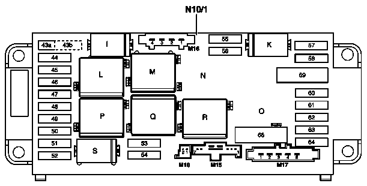

Передний SAM N10/1
Расположение реле и предохранителей

Выделены позиции, относящиеся к проверке питания ESP/BAS и Sequentronic. Заполнение гнёзд зависит от комплектации и даты выпуска. Для конкретного автомобиля сверяй расположение и номиналы по VIN.
Реле
| Позиция | Назначение |
|---|---|
| I | Звуковой сигнал |
| K | Реле питания шасси, клемма 87 |
| L | Переключение первой и второй скорости стеклоочистителя |
| M | Реле клеммы 15R |
| N | Реле насоса гидропривода Sequentronic (код 424) |
| O | Реле насоса вторичного воздуха (двигатели M112, M113, M271) |
| P | Реле клеммы 15 |
| Q | Включение и выключение стеклоочистителя |
| R | Реле питания электроники двигателя, клемма 87 |
| S | Реле стартера |
Предохранители
| № | Ток, А | Клемма | Защищаемая цепь |
|---|---|---|---|
| 43a | 15 | 30 | Реле звукового сигнала I, питание от постоянного плюса |
| 43b | 15 | 15R | Реле звукового сигнала I, питание от клеммы 15R |
| 44 | 5 | 15R | Телефон / TELE AID / подготовка под телефон (коды 853, 855, 386) |
| 45 | 7,5 | 15R | Блок управления подушками и преднатяжителями (N2/7) |
| 46 | 40 | 15 | Реле стеклоочистителя Q и L |
| 47 | 15 | 15R | Подсветка вещевого ящика и передний прикуриватель |
| 48 | 15 | 15 | В зависимости от двигателя: питание цепи 15 на M112/M113, блок вакуумного насоса тормозов на OM612.990 до 31.03.2004 или цепь питания на отдельных OM646 |
| 49 | 7,5 | 15 | Блок управления подушками и преднатяжителями (N2/7) |
| 50 | 5 | 15 | Блок выключателя света (S1). На отдельных OM612.990 также блок свечей накаливания или расходомер, в зависимости от даты выпуска |
| 51 | 7,5 | 15 | Комбинация приборов (A1), цепь управления вентилятором охлаждения. В зависимости от исполнения также датчики климат-контроля, передние фары, блок параметрического рулевого управления или насос охлаждения наддувочного воздуха AMG |
| 52 | 15 | 50 | Цепь управления стартером (M1) |
| 53 | 15 / 25 | 87 | Реле стартера S, задний SAM, блок управления двигателем. 15 А для бензиновых двигателей, включая M111. 25 А для дизельных |
| 54 | 7,5 / 15 | 87 | Цепи управления двигателем и системы улавливания паров топлива на M271. На отдельных дизелях — блок CDI, питание клеммы 30 или подогрев линии вентиляции. Назначение и номинал зависят от двигателя |
| 55 | 7,5 | 87 | Датчик угла руля (N49). С Sequentronic — блок N15/6 и выключатель распознавания передачи S16/10. В других комплектациях — соответствующие блоки АКПП и, при наличии, Distronic |
| 56 | 5 | 87 | Блок ESP/BAS (N47-5) и выключатель стоп-сигналов (S9/1) |
| 57 | 5 | 30z | Электронный замок зажигания EZS (N73), датчик угла руля до 31.05.2002 или модуль рулевой колонки с 01.06.2002. На M112/M113 также блок управления двигателем |
| 58 | 40 | 30 | Гидравлический насос Sequentronic (M46) |
| 59 | 50 | 30 | Постоянное питание блока ESP/BAS (N47-5) |
| 60 | 40 | 30 | Вторая цепь постоянного питания блока ESP/BAS (N47-5) |
| 61 | 15 | 30 | Постоянное питание блока Sequentronic (N15/6) |
| 62 | 5 | 30 | Диагностический разъём, блок выключателя света и выключатель стоп-сигналов |
| 63 | 5 | 30 | Блок выключателя света (S1) |
| 64 | 10 | 30 | Штатная аудиосистема или COMAND, в зависимости от комплектации |
| 65 | 40 | 15 | Электрический насос вторичного воздуха (M112/M113) |
Клеммы: 30 — постоянное питание, 15 — питание при включённом зажигании, 15R — питание потребителей в положении ключа 1 и при включённом зажигании, 50 — сигнал пуска, 87 — питание с выхода реле.